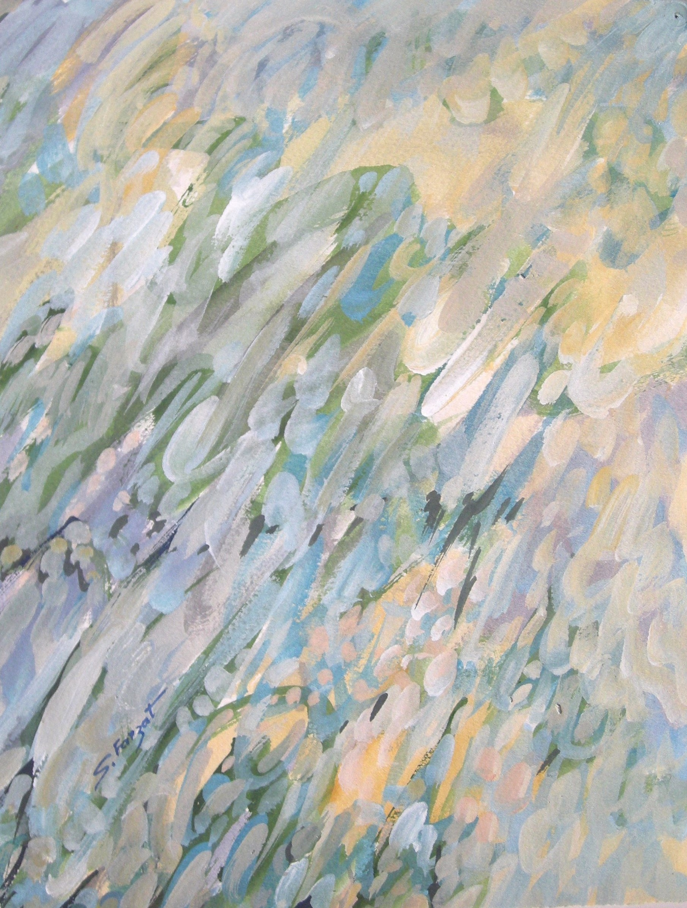

Sakher Farzat
1943–2007
Artist Biography
Sakher Farzat was born in Banias, Syria and graduated from the College of Fine Arts at Syria University in 1965. He later studied at VIII University, Paris in 1985. Farzat, painting in oils and watercolours, developed an abstract style with links to calligraphy that involved a busy and severe set of forms imposed on pastel and luminous backgrounds. He taught painting at the Faculty of Fine Arts at the University of Damascus from 1974-77 but, after a spell in Brazil, he then moved to Paris where he settled permanently. Farzat was considered one of the most important of a ‘second wave’ of Syrian artists in exile in France. He had a long exhibiting career, initially showing from 1971-77 at Urnina Gallery in Damascus, then at Tableau d’art Gallery in Sao Paolo, Brazil in 1977, Southwest Gallery in Dallas, USA from 1989-1992 and the Obsis Gallery in Paris from 1991-4. Later solo exhibitions took place in Jordan, Egypt and Morocco as well as in France. Farzat’s work is held in the Jordan National Gallery of Fine Arts collection.

Untitled